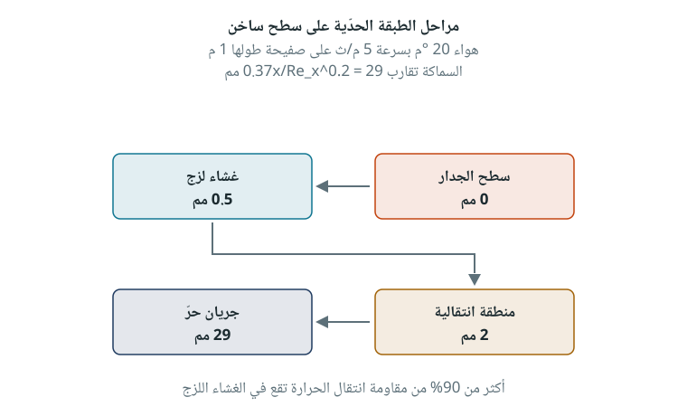

الحمل الحراري
Convection
انتقال حرارة بكتلة المائع المتحرّكة: توصيل داخل طبقة حدّية رقيقة ثم نقل بالجريان. حرّ يحرّكه الطفو الناتج عن تغيّر الكثافة، وقسري تفرضه مضخة أو مروحة، ويوحدهما قانون نيوتن للتبريد.
الحمل نمط انتقال حرارة تحمل فيه كتلة المائع المتحرّكة الطاقة معها. يبدأ بالتوصيل في طبقة رقيقة ملاصقة للسطح، ثم يحمل الجريان الحرارة إلى ما بعدها. لذلك لا يمكن وصف أي حالة حمل دون توصيل: الحمل يساوي توصيلًا داخل الطبقة الحدّية ونقلًا بالحمل خارجها.
يُقسم إلى حمل حرّ وحمل قسري. الحرّ تحدثه قوى الطفو الناتجة عن تغيّر الكثافة مع الحرارة: الهواء قرب سطح ساخن يخفّ ويصعد ويحلّ محله هواء أبرد. القسري تفرضه مضخة أو مروحة أو ريح، فيكون تدرّج السرعة أكبر والطبقة الحدّية أرقّ ومعامل الانتقال أعلى.
قانون نيوتن للتبريد q″ = h ΔT هو الصيغة الهندسية للحمل، لكنه لا يفسّر شيئًا وحده؛ فـh نفسه يجب حسابه من الارتباطات اللابعدية التي تختزل الهندسة والجريان.
كيف تعمل الظاهرة؟
في الحمل الحرّ، تسخين المائع قرب الجدار يخفض كثافته فينشأ فرق كثافة مع المائع البعيد. قوة الطفو لكل وحدة حجم تقارب ρ g β ΔT، وتقاومها اللزوجة ν وسرعة الانتشار الحراري α. نسبتهما تعطي رقم رالي Ra = g β ΔT L³/(ν α)، وهو الذي يحدّد شدة التيار: تحت Ra يقارب 10⁹ على صفيحة عمودية يبقى الجريان صفحيًّا في الطبقة الحدّية، وفوقه يصبح مضطربًا ويرتفع معامل الانتقال. في الحمل القسري تُستبدل Ra بـRe وPr، لأن المحرّك ليس الطفو بل فرق الضغط الذي تفرضه المضخة.
العلاقة بالأرقام
لوح عمودي في الهواء، L = 0.3 م، ΔT = 10 K، عند 293 K: β = 1/293 لكل كلفن، ν = 1.51×10⁻⁵ m²/s، α = 2.1×10⁻⁵ m²/s. إذًا Ra = 9.81 × (1/293) × 10 × 0.027 / (1.51×10⁻⁵ × 2.1×10⁻⁵) ≈ 2.9×10⁷. بعلاقة الصفيحة العمودية الصفحية Nu = 0.59 Ra^0.25 يكون Nu ≈ 43، ومنها h = Nu·k/L = 43 × 0.0262/0.3 ≈ 3.8 W/(m²·K). وبمساحة 1 م² وفرق 30 K ينقل هذا السطح 114 W بالحمل وحده، وهو ما يفسّر حجم مشعّ الغرفة.
مفاهيم متقاربة
الخلط الأول: تسمية كل هواء ساخن حملًا حتى داخل التجاويف المغلقة؛ إن سُدّ الحمل تمامًا في عزل مسامي مغلق انتقلت الحرارة بالتوصيل عبر الهواء فقط، وهو أسوأ ناقل عمليًّا. الثاني: الخلط بين الحمل والإشعاع في أجسام الغرف؛ جسم عند 60 °م يشع أيضًا، وتقسيم الفيض بين النمطين يحتاج حساب كل حدّ على حدة لا إضافة معامل واحد. الثالث: القول إن الحمل الحرّ أبطأ دائمًا؛ في الماء ودرجات الحرارة العالية قد يعطي h بالآلاف، والفرق الحقيقي في سيطرة الطفو لا في سرعة المائع وحدها.
حدود التطبيق
ارتباطات الحمل الحرّ تتغيّر شكلًا مع الاتجاه: صفيحة عمودية، وأفقية ساخنة من أعلى، وأفقية ساخنة من أسفل، ولكلٍّ ثوابت مختلفة ونطاقات Ra مختلفة. وفي الحيّز المحصور تختفي العلاقات الخارجية وتظهر ارتباطات تعتمد على نسبة الأبعاد. انعدام الجاذبية يلغي الطفو فتتحول الحرارة إلى توصيل وإشعاع فقط. وفي الهواء الرطب يضيف التبخّر والتكثّف انتقال كتلة مقترنًا بالحرارة فيتجاوز النموذج الجاف. وتفترض النماذج خواص ثابتة، وهذا لا يصح عند فروق حرارة كبيرة أو قرب النقطة الحرجة.

| الكمية | القيمة | المصدر |
|---|---|---|
| معامل الحمل الحرّ المحسوب للوح العمودي | 3.8 W/(m²·K) | [3] |
| رقم رالي للحالة | 2.9×10⁷ بلا وحدة | [3] |
| رقم نوصلت المحسوب | 43 بلا وحدة | [1] |
| الحرارة المنقولة من متر مربع عند فرق 30 K | 114 W | [3] |
| فرق الحرارة المفترض | 10 K | [3] |
المصادر
- 1 Boundary Layer — NASA Glenn Research Center. www1.grc.nasa.gov/beginners-guide-to-aeronautics/boundary-layer/ · اطُّلع عليه 2026-11-16
- 2 University Physics Volume 2 — 1.6 Mechanisms of Heat Transfer — OpenStax. openstax.org/books/university-physics-volume-2/pages/1-6-mechanisms-of-heat-transfer · اطُّلع عليه 2026-11-16
- 3 Convective Heat Transfer — The Engineering ToolBox. www.engineeringtoolbox.com/convective-heat-transfer-d_430.html · اطُّلع عليه 2026-11-16
استشهد بهذا المصطلح
الصيغتان مبنيتان من بيانات الصفحة نفسها: العنوان والتاريخ ورابط النسخة المنشورة.
الحمل الحراري — Convection. (2026). ديوان المعرفة — انفراد. https://infiradev.com/diwan/terms/convection.html
@misc{convection2026,
title = {الحمل الحراري},
titleaddon = {Convection},
howpublished = {{ديوان المعرفة — انفراد} — مرجع علمي عربي},
year = {2026},
url = {https://infiradev.com/diwan/terms/convection.html},
urldate = {2026-11-16},
note = {مراجعة علمية: مراجعة آلية — ديوان المعرفة (روابط المصادر + عقد المحتوى + وجود الرسم) 2026-11-16}
}
راجعه: مراجعة آلية — ديوان المعرفة (روابط المصادر + عقد المحتوى + وجود الرسم) 2026-11-16 · 2026-11-16 · آخر تحديث 2026-11-16